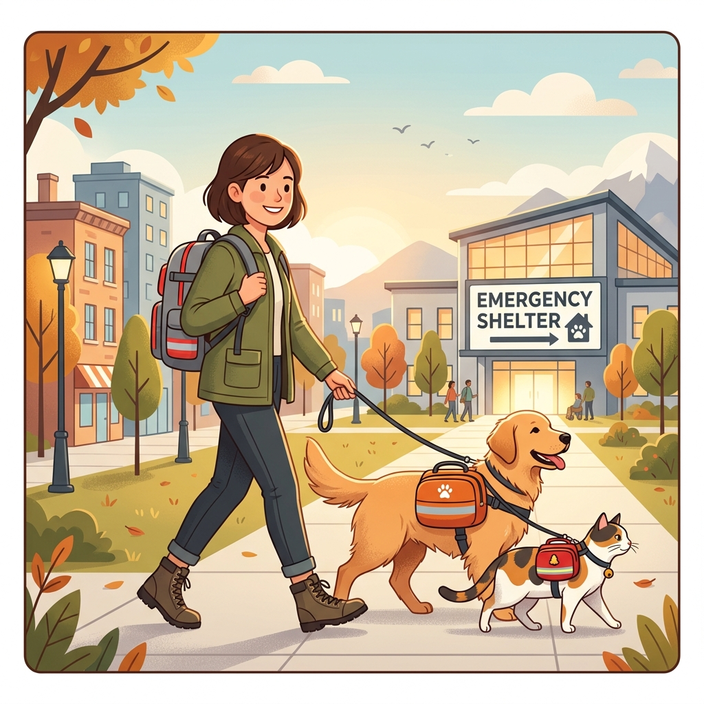

【2026年最新】フェーズフリーで選ぶ！100均で買える神防災グッズ
ダイソーやセリアで手に入る、普段使いできていざという時にも大活躍する、2026年最新のフェーズフリーな神アイテムを厳選しました。

1000人規模のオープンチャットで災害時に役立つ情報共有のコツ。デマ拡散を防ぐ方法、LINEでの効果的な安否確認のルールを徹底解説します。

ダイソーやセリアで手に入る、普段使いできていざという時にも大活躍する、2026年最新のフェーズフリーな神アイテムを厳選しました。

ペットを置いて逃げることはできません。2026年最新の「同行避難」のルールと、犬・猫のための必須防災グッズリストを解説します。

災害時に飛び交うフェイクニュースやAI生成画像に騙されないためのSNS活用法と、正しい情報の探し方を解説します。

非常時にも役立つ最新の防災アプリを紹介。オフラインで使える地図や、家族の安否確認アプリなど、スマホのデジタル備蓄を始めましょう。

事前予測ができる台風・豪雨だからこそ、自分専用のスケジュール避難計画「マイ・タイムライン」を作っておけば100%安全に逃げ切れます。
南海トラフ巨大地震に備えるための具体的な対策を解説。自宅で今すぐできる防災対策7つと、備蓄リスト、避難計画の立て方を紹介します。